Starts the script when the character is touched by another character.
Start on Message
Starts the script whenever a message of the specified color is sent.
Send Message
Sends a message of the specified color.
Motion Blocks
Move Right
Moves the character a specified number of grid squares to the right.
Move Left
Moves the character a specified number of grid squares to the left.
Move Up
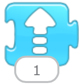
Moves the character a specified number of grid squares up.
Move Down
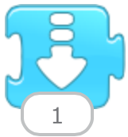
Moves the character a specified number of grid squares down.
Turn Right
Rotates the character clockwise a specified amount. Turn 12 for a full rotation.
Turn Left
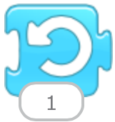
Rotates the character counterclockwise a specified amount. Turn 12 for a full rotation.
Hop
Moves the character up a specified number of grid squares and then down again.
Go Home
Resets the character's location to its starting position. (To set a new starting position, drag the character to the location).
Looks Blocks
Say
Shows a specified message in a speech bubble above the character.
Grow
Increases the character's size.
Shrink
Decreases the character's size.
Reset Size
Returns the character to its default size.
Hide
Fades out the character until it is invisible.
Show
Fades in the character until it is fully visible.
Sound Blocks
Pop
Plays a "Pop" Sound
Play Recorded Sound
Plays a sound recorded by the user.
Control Blocks
Wait
Pauses the script for a specified amount of time (in tenths of seconds).
Stop
Stops all the characters' scripts.
Set Speed
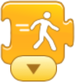
Changes the rate at which certain blocks are run.
Repeat
Runs the blocks inside a specified number of times.
End Blocks
End
Indicates the end of the script (but does not affect the script in any way).
Repeat Forever
Runs the script over and over.
Go to Page
Changes to the specified page of the project.
Tips & Hints
Tips and hints that you might find useful as you explore ScratchJr. For answers to more general questions about ScratchJr, see the Frequently Asked Questions.
Making, Renaming, and Deleting Projects
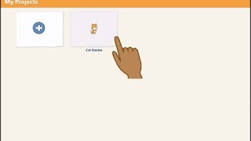
Learn how to make a new project, rename an existing project, and delete a project. Watch video
Character Animation using the ScratchJr Blocks
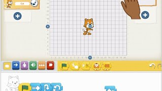
Make a simple script by connecting blocks together. Watch video
Multiple Characters
Learn how to add characters to your project. Watch video
Trigger Blocks
Use trigger blocks to specify when a script should run. Watch video
Sharing ScratchJr Projects
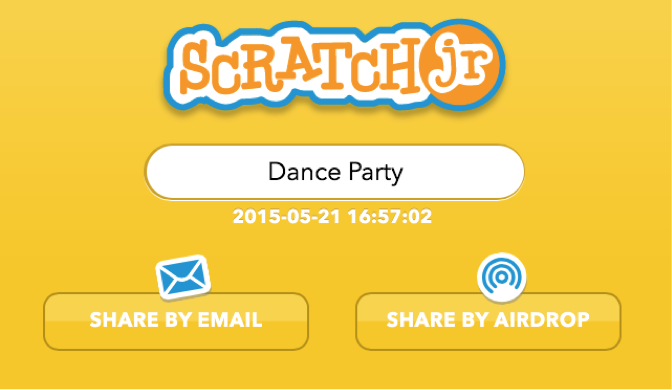
You can share projects by email. On iPads you can also share project by AirDrop. Read more
Sample Projects
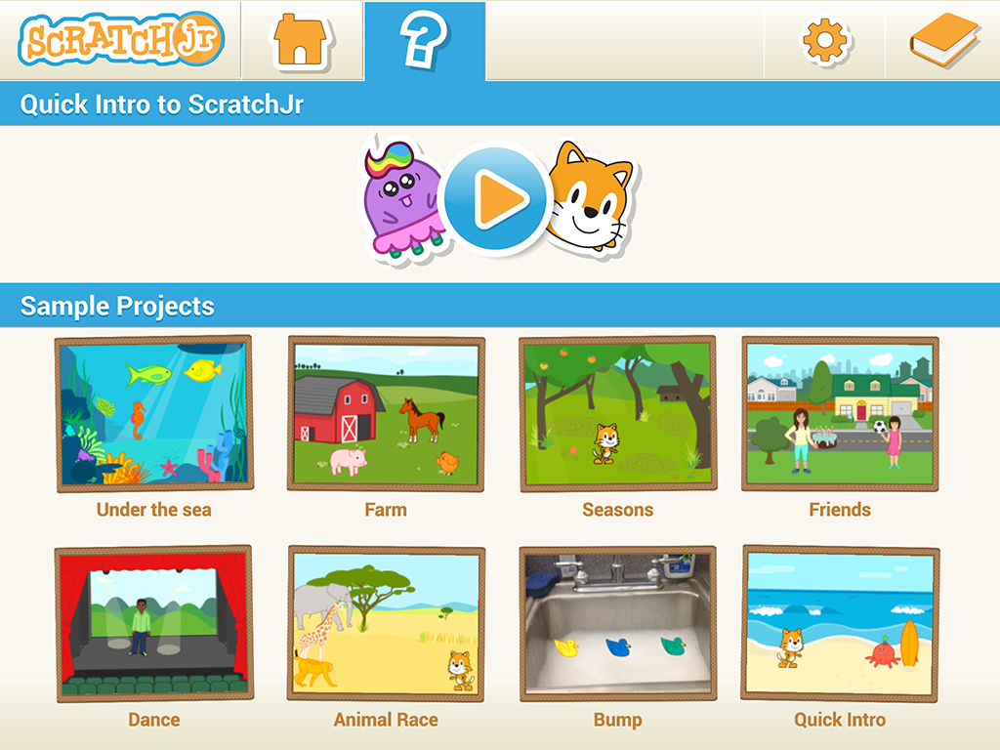
The Sample Projects library is a collection of eight pre-made projects that use a range of blocks and features to show you the variety of projects you can make with ScratchJr. Read more
Character List Scrolling
If there's a scroll bar in the Character List on the left of the Stage it means you that you have more characters in your project than fit in the list on the screen. You can scroll through this list of characters by swiping up or down on the list, but not on the scroll bar. The order of the characters doesn't matter for any of the action in the project.
Copying Characters
To copy a character and its scripts, you can drag the character from the list of characters on the left over to the list of pages on the right.
This will work for copying characters to the same page and to other pages. The scripts and sounds will copy along with the character, but then the scripts are separate, so when you change the scripts or sounds of one of the copies, it won't affect the other existing copies of the character.
Copying Scripts
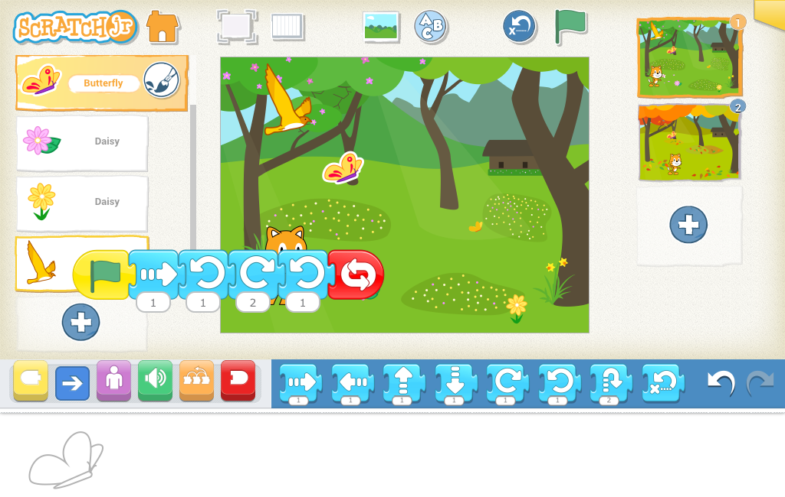
You can copy a script (set of blocks) from one character to another in the same project. Read more
Multi-page projects
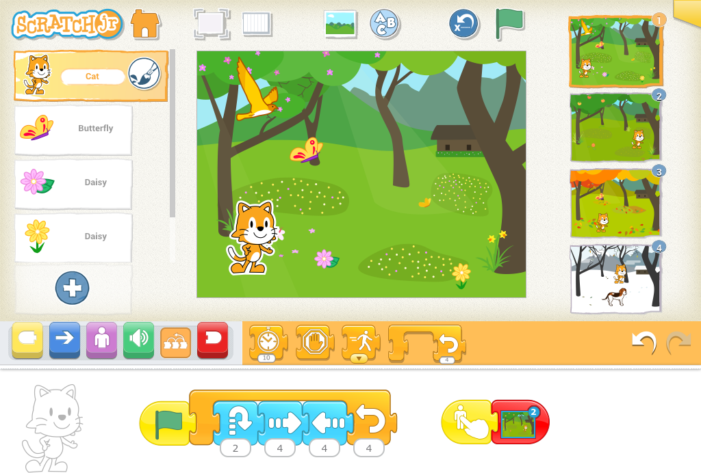
Projects can have up to four pages with their own characters and scripts. Read more
Moving Backwards
You can make a character move backwards by giving your motion blocks negative numbers. If you want to make your character face the opposite direction without moving forward or backward, add a motion block with a zero and tap on it.
Making, Renaming, and Deleting Projects
Watch the video to learn how to make a new project, rename an existing project, and delete a project.
Character Animation using the ScratchJr Blocks
See how to make a simple script by connecting blocks together.
Multiple Characters
See how to add characters to your project.
Trigger Blocks
See how to use trigger blocks to specify when a script should run.
Sharing ScratchJr Projects
You can share your ScratchJr projects in one of two ways: by email or by AirDrop.
When the project you want to share is open, tap the yellow tab in the top-right corner to go to the Project Information screen.
Then select your sharing method: Share by Email or Share by AirDrop. Regardless of which method you use to send your project, the recipient tablet must have ScratchJr installed. If you choose to share by AirDrop, the sender and the recipient must both be iPads.
For both sharing by email and AirDrop, the sender must first answer a simple math problem to ensure that an adult approves sharing the project with others.
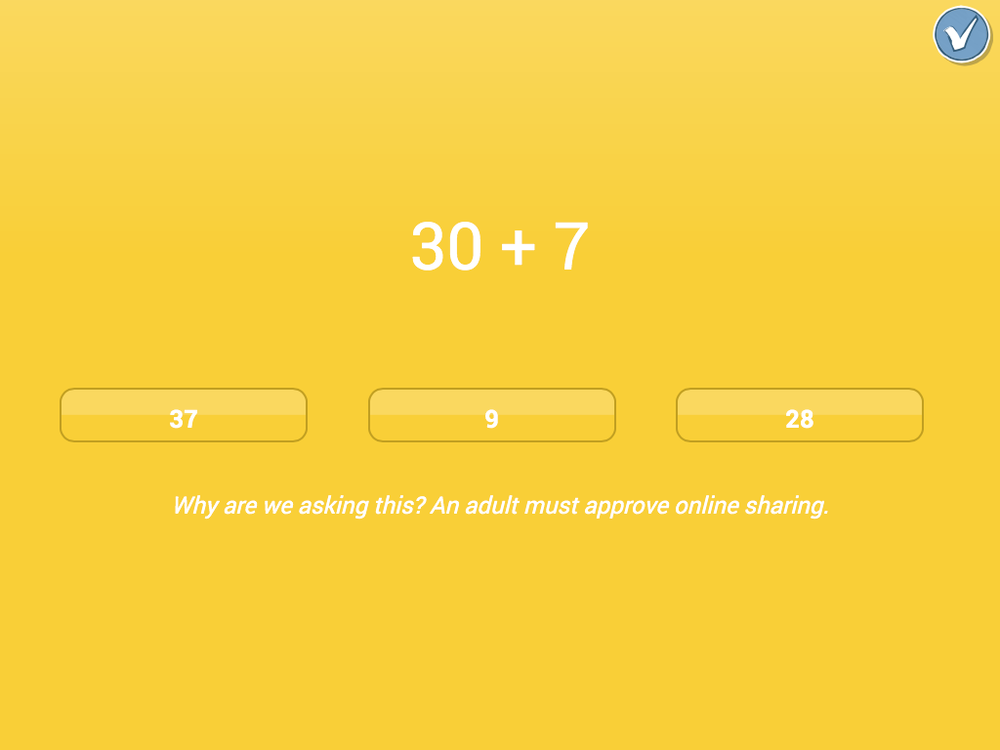
Sharing by Email
When you select Share by Email you'll see an email message with your project attached to it.
Type in the email address of the person you want to share your project with and tap Send.
When the recipient taps on the email attachment, they will get the following pop-up:
When they tap Open in "ScratchJr", they will see the project you shared on the Home screen, wrapped in blue ribbon.
After they have opened the project once, the blue ribbon will disappear from the Home screen. Note: You can only send attachments on a iPad through the iPad's Mail app.
Sharing by AirDrop
To use AirDrop, you need to know the name of the iPad you want to send your project to. You can find out the name of an iPad by going to Settings > General > About > Name.
Make sure Bluetooth and Wifi are also turned on for both iPads, and make sure you are within about 30 feet of the iPad you want to send to. When you select AirDrop, you will see which iPads are ready to receive your project.
These are the iPads that are available for AirDrop. If you don't see the iPad you're looking for, make sure it's on and not sleeping.
When you select an iPad for AirDrop, the recipient will see the following message:
If the recipient taps Accept, ScratchJr will tell you that the project was accepted with a "Sent" message.
The recipient will see the shared project wrapped in blue ribbon on the Home screen.
After they've opened the project, the blue ribbon will disappear from the Home screen.
If AirDrop isn't available on your iPad (earlier than 4th generation or iOS 7), you'll see this message:
If the recipient iPad doesn't have ScratchJr installed, you'll see this message:
Install ScratchJr and the project should now be visible. Note: If you have several iPads with the same name,you won't know which iPad to send the file to. In that case, turn off AirDrop on all of the iPads except the one you want to send your project to.
To turn off AirDrop, swipe up from the bottom of the iPad. You will see the following:
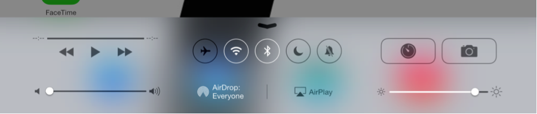
Tap on "AirDrop" and set the option to "Off".
Notes on Sharing Projects
When you share a project all the images, recordings, sounds, and any created characters or backgrounds in your project will be transferred from one device to the other.
ScratchJr doesn't number or rename the project on the target device, so if you send it lots of times you can end up with multiple copies of the same project. ScratchJr treats each copy as a separate project even if each copy has the same name, so if you make any changes to a project make sure to rename it before you share it so that the recipient can distinguish between the versions.
Sample Projects Library
The Sample Projects Library is a collection of eight pre-made ScratchJr projects that use a range of blocks and features to show you the variety of projects you can make with ScratchJr. You can run these projects to see how they work, and you can change the blocks around to see what effect it has on the action.
Access the Sample Projects library from the Home screen by tapping on the question mark.
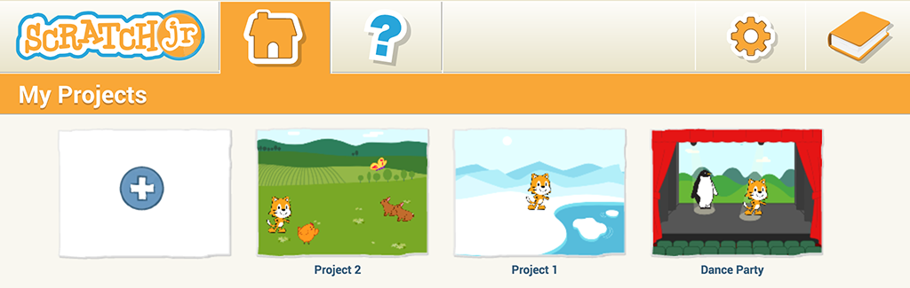
To run the Sample Projects choose a project and then tap on the Green Flag in each one. You can have a look at the scripts of the various characters, and even try changing the scripts to see what effect it has. The things you can't do in a Sample Project are: add characters or pages, change the background, add a title, or save any changes that you make.
After you have explored the sample projects, tap on the home button to create your own project using the full ScratchJr interface.
Copying Scripts
You can copy a script from one character to another by dragging the script from the programming area to the character in the list on the left.
But you can also duplicate a script in a single programming area if you drag the script to the same character the script belongs to in the character list.
The copy will appear on top of the original script, but slightly offset. Just drag it over to one side to see both copies.
The only thing that can't be copied from one character to another is a recorded sound. If a script has a recorded sound, the sound will be replaced by the Pop sound in the copied script. You can copy sounds for the same character though, so the recorded sound will duplicate itself in the duplicated script
Multiple pages
You can have up to four pages in a project. When you have more than one page connected by Go To Page blocks, you can get your scripts to run automatically by starting all the scripts with a Green Flag. Then, when the Go To Page block turns to a page, any scripts on that page with a Green Flag will run.
When you tap the Green Flag, the action will start on whichever page is currently selected, so make sure you choose Page 1 of your project before tapping the Green Flag to get it to run from the beginning.
You can change the order of the pages by dragging them to a new position in the page list on the right.
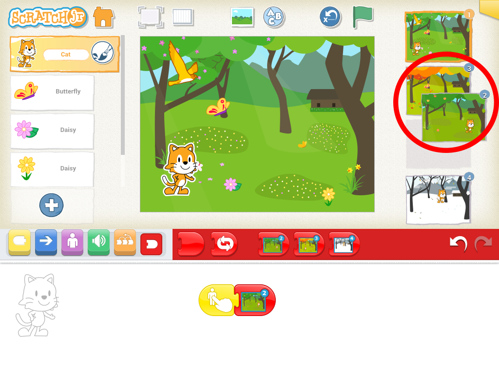
When you rearrange the pages, ScratchJr will also renumber the End blocks for those pages, even if you've already placed them in scripts, so that the pages still turn to the same page that you asked them to in the first place. If you want the script to go in the new order of the pages on the right, just replace the Go To Page blocks in the scripts.


 After they have opened the project once, the blue ribbon will disappear from the Home screen.
After they have opened the project once, the blue ribbon will disappear from the Home screen.  These are the iPads that are available for AirDrop. If you don't see the iPad you're looking for, make sure it's on and not sleeping.
These are the iPads that are available for AirDrop. If you don't see the iPad you're looking for, make sure it's on and not sleeping.